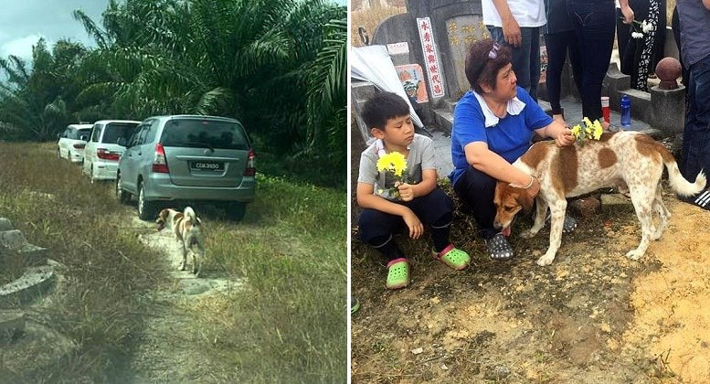

Loyal Dog Joins the Procession for His Mom’s Funeral

We know that a dog’s love and loyalty knows no bounds, but sometimes it still comes as a surprise to see just what lengths our wonderful companions will go to demonstrate their devotion. When an elderly woman in Malaysia died, family members were shocked to see her dog Bobby accompanying them to her funeral.

The family was on their way to the place where the woman’s body was to be laid to rest when her great-grandson noticed that a dog was trotting alongside the procession of vehicles. It was Bobby, his grandmother’s dog. He walked with them for the entire two miles.
“I don’t think anyone knew he was following,” Leong Khai Wai told
The Dodo.

Bobby did not appear to have been offered a lift, but he didn’t need one, and made his way there right along with the caravan. Once they arrived at the burial site, Bobby lay down next to the hole, refusing to move, as if to show mourners that he belonged there just as much as anyone else.

“They said it was the first time they’d ever seen such extreme loyalty in a dog,” Leong explained.
Bobby’s fealty to his caretaker served him well; after the funeral, Leong and his great-uncle took Bobby in. Hopefully the love they all shared for this woman will bond them and help them grieve and move forward in their lives.